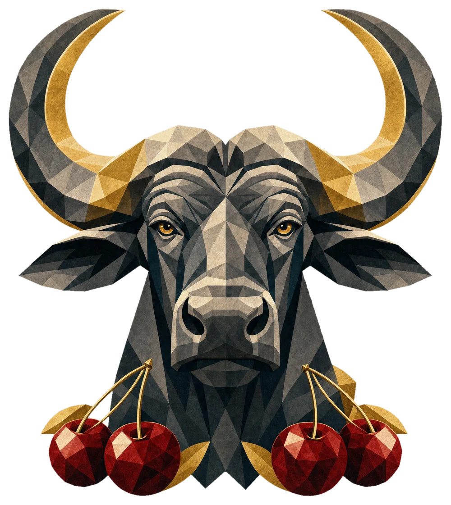
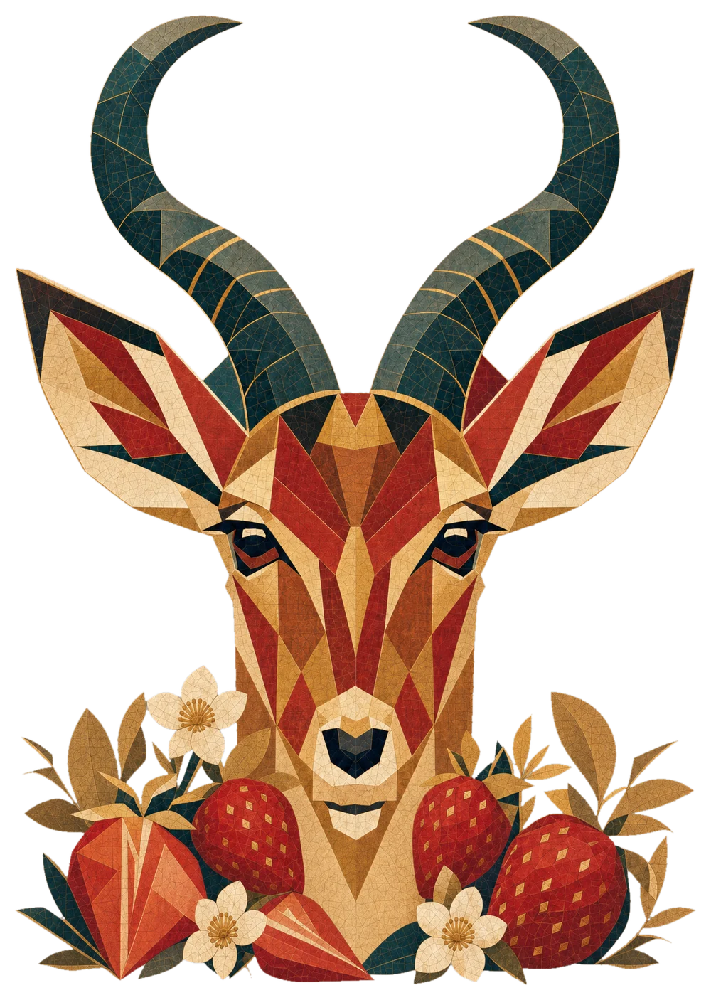
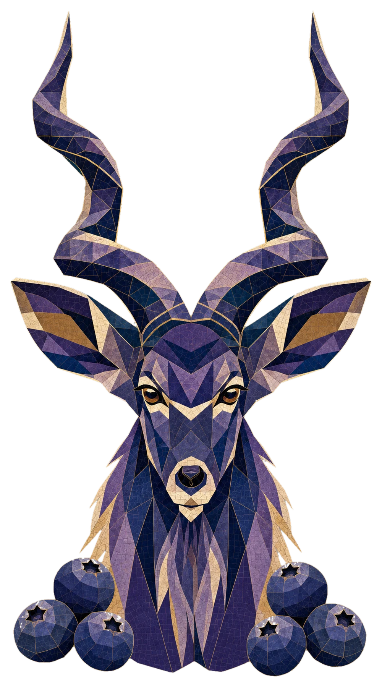
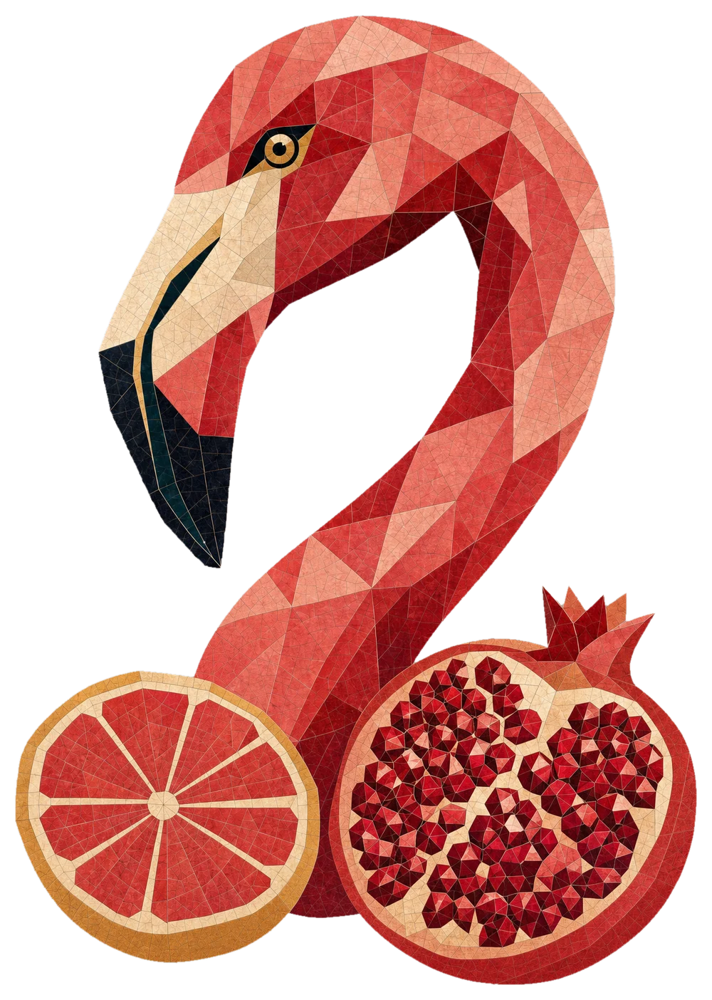
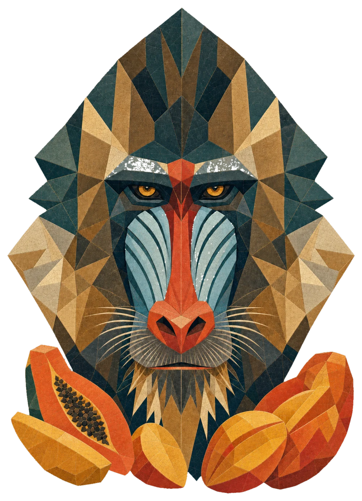
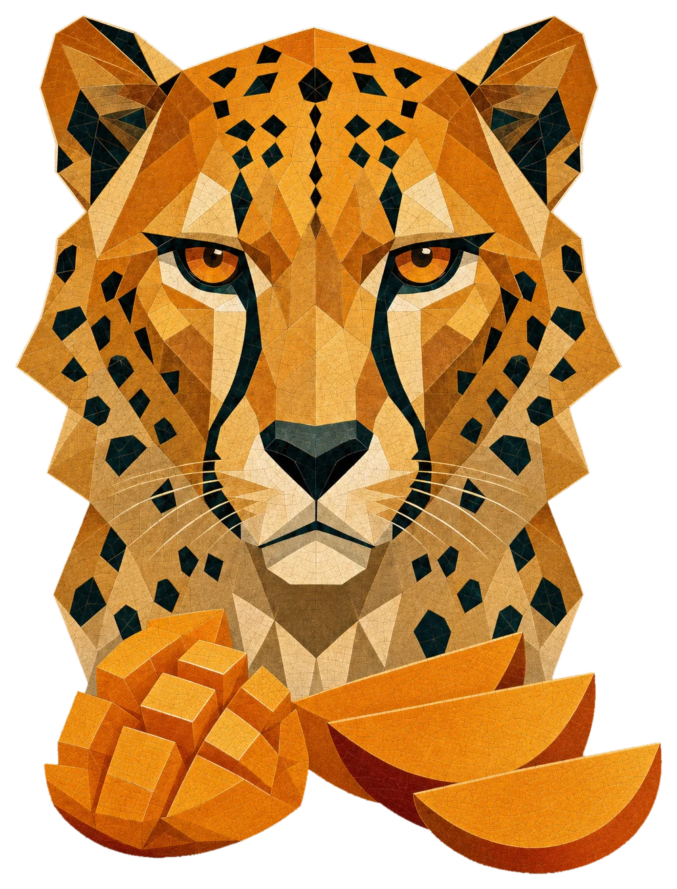
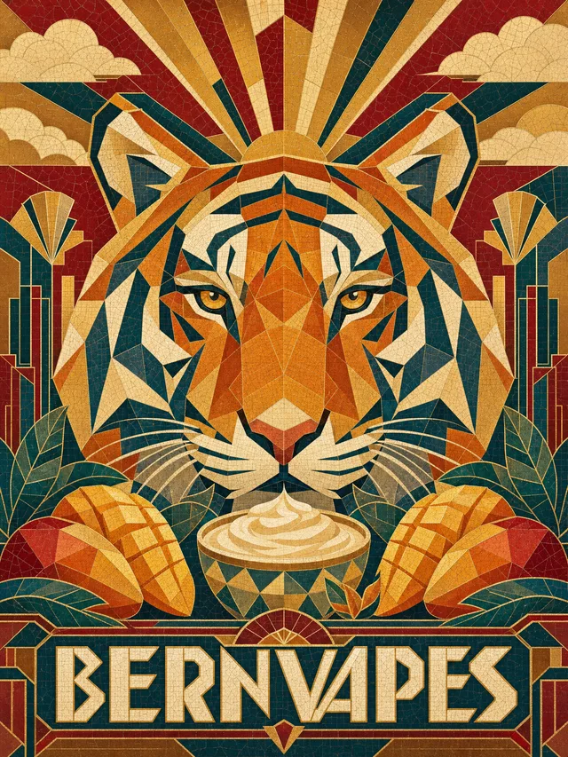
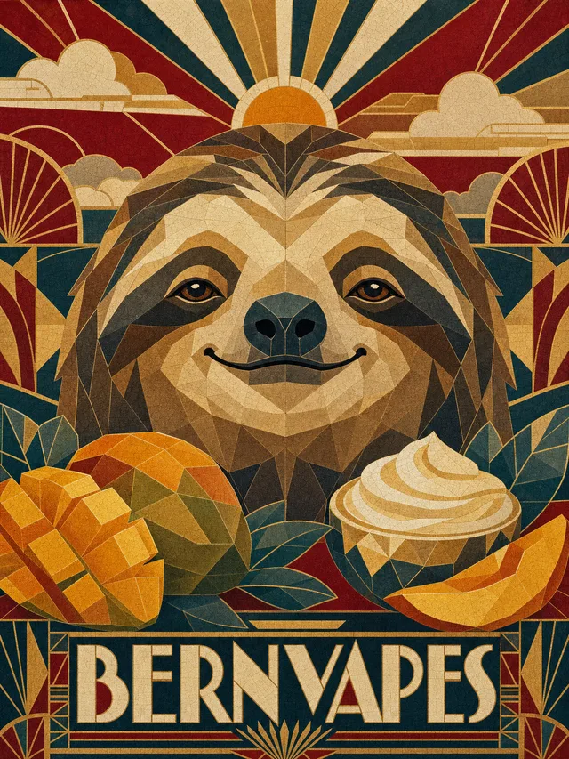
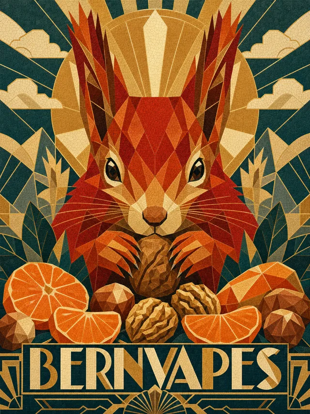
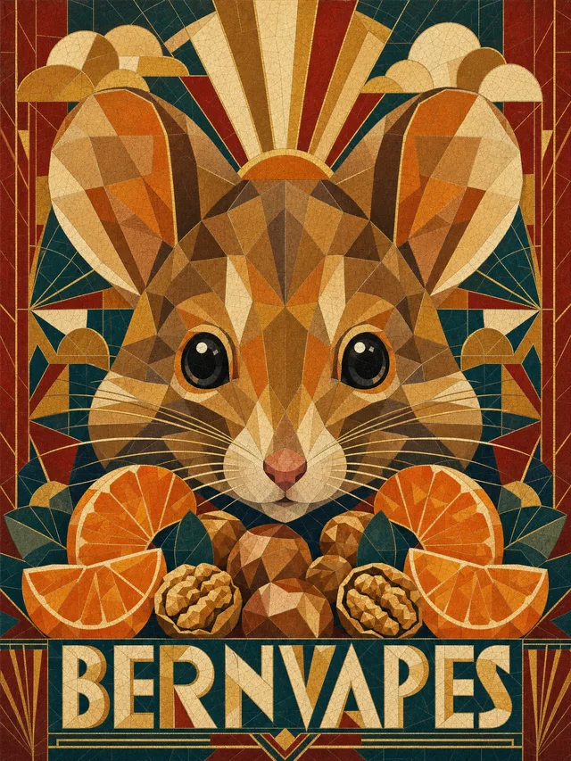

Sächs Idee, no nid im Sortimänt. Mir zeige se trotzdäm — wüu si üs gfaue. Choufe geit no nid, gluschte scho.






Für jedi nöii Sorte hei mir mehreri Tier probiert. Die hie hei mir gärn übercho — aber nume eis pro Sorte darf uf d Fläsche.



